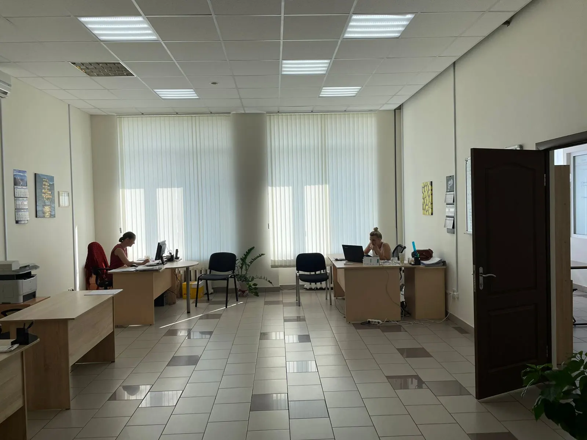
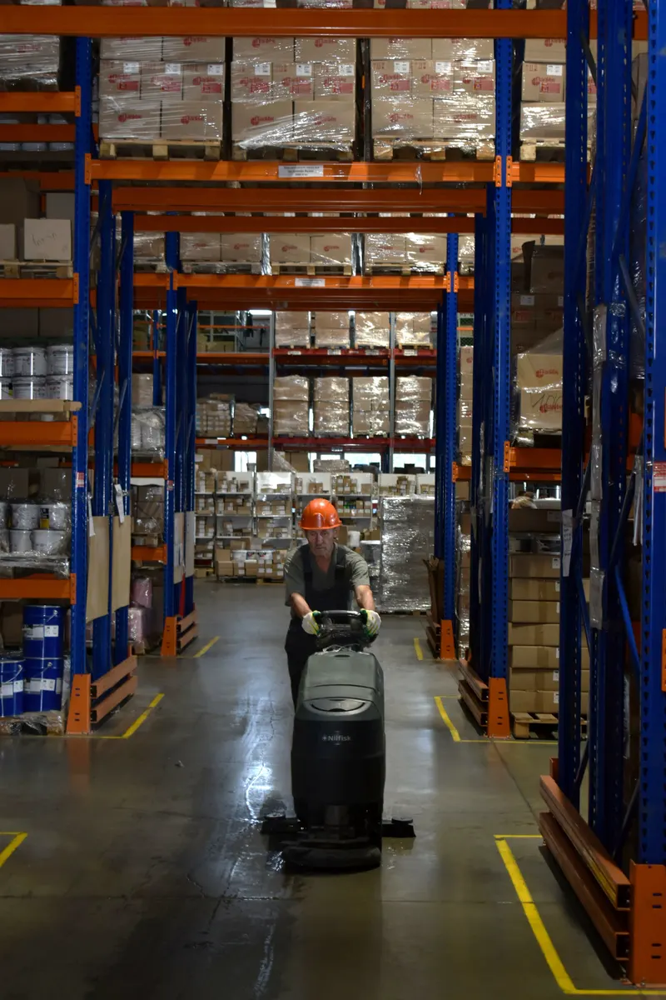
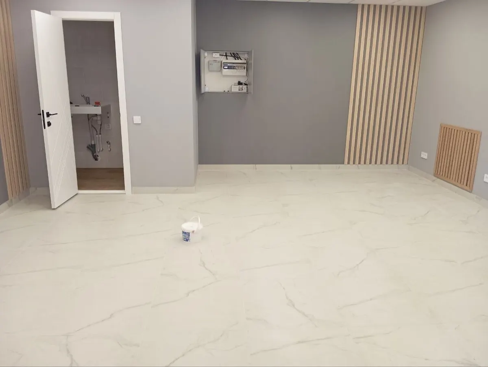
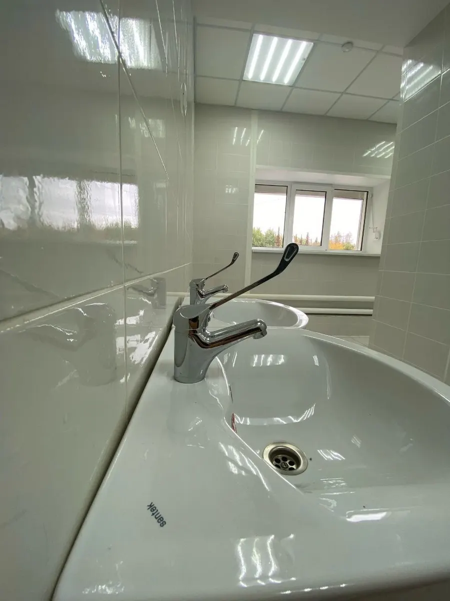

Клининговая компания · Ижевск
Уборка офисов, магазинов и после ремонта в Ижевске
Ежедневная и генеральная уборка, уборка после ремонта. Объёмы, критерии качества и график фиксируем в договоре.
- Работаем по договору
- Пн–Пт, 08:00–17:00

Что входит в уборку
Входит
- Ежедневная: полы, пыль с поверхностей до 1,5 м, зеркала, раковины, унитазы, мусор до 10 кг
- Генеральная: полы, стены, потолок, люстры, двери, сантехника, кухонный гарнитур
- После ремонта: сбор мусора, снятие плёнки, чехлов и скотча, строительная пыль
- Средства без резкого запаха (из отзыва клиента)
Отдельно, если нужно
- Мытьё окон, фасадов и витрин – отдельная услуга
- Химчистка офисной мебели – отдельная услуга
Цены на уборку
Цены из карточки компании на Яндекс.Картах. Точную сумму назовёт менеджер после уточнения объёма работ.
Уборка помещений
- Ежедневная уборка офисов, кафе, ресторанов, производствполы, пыль на поверхностях до 1,5 м, зеркала, раковины, унитазы, вынос мусора до 10 кг70 ₽ за м²
- Генеральная уборкаполы, стены, потолок, люстры, зеркала, двери, сантехника, кухонный гарнитур, ковры и мебель100 ₽ за м²
- Уборка после ремонтавывоз мусора, снятие плёнки, чехлов и скотча, строительная пыль, шкафы, радиаторы, сантехника130 ₽ за м²
Отдельные услуги
- Мытьё окон, фасадов, витринокна любой сложности внутри и снаружи500 ₽ <<запросить у заказчика>>
- Химчистка офисной мебелиофисные стулья, диваны, кресла350 ₽ <<запросить у заказчика>>
Единицу измерения цены и итоговую сумму подтверждает менеджер.
Как начать
- 01
Заявка
Звоните или пишете в WhatsApp: коротко описываете объект и задачу.
- 02
Объёмы и критерии
Обсуждаем объёмы работ и критерии оценки качества.
- 03
Договор
Заключаем соглашение и согласуем график уборки.
- 04
Уборка
Выходим по графику, менеджер остаётся на связи.



Как работаем
По договору
Объёмы, критерии качества и график фиксируются в соглашении.
Менеджер на связи
Вопросы решаются оперативно, замечания устраняются.
Один подрядчик на разные задачи
Уборка, мытьё окон, химчистка офисной мебели, чистка кровли от снега.
Отзывы с Яндекс.Карт
«Полгода назад заключили договор на уборку нашего здания. Очень довольны тем что остановились именно на данной компании. Менеджер всегда на связи. Решает оперативно все вопросы. Также оказывают дополнительные услуги по чистке кровли от снега и уборку придомовой территории. Очень удобно с одним контрагентом решать многие вопросы по обслуживанию здания!»
Rustam G. · 16 августа 2022
«У нас два магазина и офис, обратились в клининговую компанию Впорядке за помощью. Обсудили объемы, критерии оценки качества, график уборки и заключили соглашение на ежедневное клининговое облуживание. Очень удобно. Нам нравится. Рекомендуем.»
Евгений Т. · 16 августа 2022
«Заехали в другую квартиру, приглашала эту компанию для уборки после предыдущих жильцов, в частности для мытья кухни! Справились на «ура»! Быстро и качественно, отмыли все поверхности, духовку и вытяжку и даже внутри всех шкафов! Мне осталось только разложить свои вещи) спасибо! Будем пользоваться вашими услугами ещё !)»
Elena S. · 9 сентября 2022
Отзывы с карточки на Яндекс.Картах, без правок.
Частые вопросы
Какие помещения убираете?
Офисы, магазины, кафе и рестораны, производственные помещения. Генеральную уборку и уборку после ремонта делаем и в квартирах.
Как оформляется работа?
Обсуждаем объёмы, критерии качества и график уборки и заключаем соглашение. Ежедневная уборка идёт по этому графику.
В какие дни работаете?
С понедельника по пятницу с 08:00 до 17:00. Суббота и воскресенье – выходные.
Можно заказать что-то кроме уборки?
Да: мытьё окон, фасадов и витрин, химчистку офисной мебели, чистку кровли от снега.
Опишите объект – обсудим объёмы и график
- Адрес
- ул. Кирова, 172, Ижевск, Ижевск
- Часы
- Пн–Пт 08:00–17:00, Сб–Вс выходной
- Телефон
- +7 (912) 454-09-09